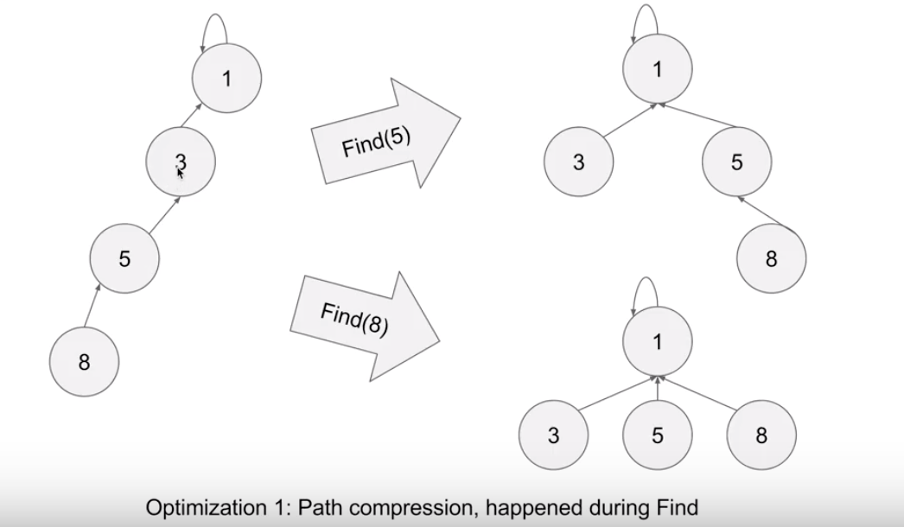

Introduction
UnionFind is a data structure provides two operation, union and find. UnionFind can quickly find if two elements are in the same group ~O(1), and quickly merge two groups ~O(1).
The purpose of UnionFind is to merge two groups, and find what group that an element belongs to.
UnionFind is a tree structure that is implemented with HashMap and may be optimized with array. Child node point to parent node; parent node does not know children.
Using "path compression" and "union by rank" to achieve ~O(1) find;
-
Path Compression
After each find, we bind the node directly to root.

-
Union by rank
always attaches the shorter tree (low rank) to the root of the taller tree (high rank).
-
Algorithm
Union return false if two element already on the same group;
public class UnionFind { private Map<Integer, Integer> container; private Map<Integer, Integer> rank; public UnionFind(){ container = new HashMap<>(); rank = new HashMap<>(); } public Integer find(int element){ Integer copyEle = element; Integer parent = container.get(element); while(parent!= null && parent != element){ element = parent; parent = container.get(element); } if(parent != null){ // path compression container.put(copyEle, parent); } return parent; } public boolean union(int element1, int element2){ Integer p1 = find(element1); Integer p2 = find(element2); if(p1 == p2 && p1 != null){ return false; } if(p1 == null && p2 == null){ container.put(element1, element1); container.put(element2, element1); rank.put(element1, 1); rank.put(element2, 0); }else if(p1 == null){ container.put(element1, p2); }else if(p2 == null){ container.put(element2, p1); }else{ int p1Rank = rank.get(p1); int p2Rank = rank.get(p2); if(p1Rank > p2Rank){ // p1 higher container.put(p2, p1); }else if(p2Rank > p1Rank){ container.put(p1, p2); }else{ container.put(p2, p1); rank.put(p1, rank.get(p1) + 1); } } return true; } } -
Optimization
The difference between hashmap and array implementation
1). array's index is the element, which means we have to guarantee that elements span a small range e.g. (0, 100), or (100000, 100100)
2). hashmap initially is empty, but we can assume array implementation is full, and each element is a group.